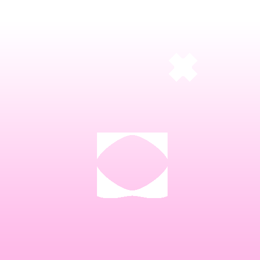

Taylor Swift
Small-town scenes and first crushes. Start with: "Tim McGraw."
A bright, pink celebration of Taylor Swift's songwriting, eras, and the songs that make each album feel like its own little world.

Taylor Swift is a singer-songwriter known for turning sharp details into unforgettable pop moments. From country beginnings to stadium-ready pop, indie folk, and late-night confessionals, her catalog has a doorway for every mood.
Start with the album color that calls to you, then follow the songs. There is no wrong order: this is a discography built for revisiting.
Each card is a starting point, with a quick mood check and one essential track to put on first.
Small-town scenes and first crushes. Start with: "Tim McGraw."
Fairy-tale heartache and fearless joy. Start with: "Love Story."
Big feelings, bigger gowns, all self-written. Start with: "Enchanted."
Messy, vivid, and emotionally cinematic. Start with: "All Too Well."
Polaroids, pop hooks, and a clean new sound. Start with: "Style."
Sharp edges with a soft center. Start with: "Delicate."
Glitter pens, sunsets, and open-hearted pop. Start with: "Cruel Summer."
Quiet stories that reward close listening. Start with: "august."
Complicated characters and wintery folklore. Start with: "willow."
Restless thoughts turned into glittering pop. Start with: "Maroon."
Black-and-white confessionals with a restless pulse. Start with: "Down Bad."
A reminder that every album is part of the show. Start wherever you are.
For a first pass through the eras, these five songs show the range: sparkling romance, devastating writing, synth-pop confidence, and secret storybook worlds.
This is an unofficial Taylor Swift fan page created as a university CTF challenge. The visual design is a tribute to the many colors of her albums; all artist imagery and names belong to their respective owners.